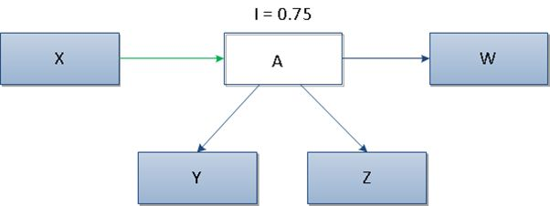

Instability (I)
Instability between packages (I) measures the ratio between the outgoing and the total number of
in- and outgoing couplings from classes inside the package from/to classes outside the package
(coupling to classes external classes of the package, uses I definition of coupling).
Each class counts only once. Zero if the package does not contain any classes or if external
classes are not used by the package's classes.

In the picture above it can be seen that class A has 3 outgoing and 1 incoming dependencies,
therefore according to the formula value of metric I will equal 0,75.
On the basis of value of metric I we can distinguish two types of components:
-
The ones having many outgoing dependencies and not many of incoming ones (value I is close to 1),
which are rather unstable due to the possibility of easy changes to these packages;
-
The ones having many incoming dependencies and not many of outgoing ones (value I is close to 0),
therefore they are rather more difficult in modifying due to their greater responsibility.
Preferred values for the metric I should fall within the ranges of 0 to 0.3 or 0.7 to 1.
Packages should be very stable or unstable, therefore we should avoid packages of intermediate stability.
Included in the set of metrics proposed by Robert C. Martin,
See
Martin, R. C. OO design quality metrics. An analysis of dependencies. 28 October 1994.
Martin, R. C. Agile Software Development: Principles, Patterns, and Practices.
Alant Apt Series. Prentice Hall, Upper Saddle River, NJ, USA 2002
- Highly Related Software Quality Properties
-
- Re-Usability
-
is negatively influenced by coupling.
- Understandability for Reuse:
-
A part of a system that has a high (outgoing)
efferent coupling may be highly inversely related
to understandability, since it uses other parts
of the system which need to be understood as
well.
Understandability decreases with increasing I.
- Attractiveness:
-
Parts that have a high (outgoing) efferent
coupling may be highly inversely related to
attractiveness, since they are using other parts
of the system which need to be understood as
well, and represent dependencies.
Attractiveness decreases with increasing I.
- Maintainability
-
decreases with increasing I.
- Analyzability:
-
Parts that have a high (outgoing) efferent
coupling may be highly inversely related to
analyzability, since they are using other parts
of the system which need to be analyzed as well.
Analyzability decreases with increasing I.
- Changeability:
-
Parts that have a high (outgoing) efferent
coupling may be inversely related to
changeability, since they are using other parts
of the system which might need to be changed as
well.
Changeability decreases with increasing I.
- Stability:
-
Parts of a system showing a high afferent
(ingoing) coupling from other system parts may be
inversely related to stability, since other parts
are affected by them. Parts showing a high
(outgoing) efferent coupling may be inversely
related to stability, since they are using other
parts of the system, which are can affect them.
Stability decreases with increasing I.
- Testability:
-
Parts that have a high (outgoing) efferent
coupling may be highly inversely related to
testability, since they are using other parts of
the system which increase the number of possible
test paths.
Testability decreases with increasing I.
- Portability
-
decreases with increasing I.
- Adaptability:
-
Parts that have a high (outgoing) efferent
coupling may be inversely related to
adaptability, since they are using other parts of
the system which might need to be adapted as
well.
Adaptability decreases with increasing I.
- Related Software Quality Properties
-
- Functionality
-
is both negatively and positively influenced by
coupling.
- Interoperability:
-
Parts that have a high (outgoing) efferent
coupling may be directly related to
interoperability, since they are
using/interacting with other parts of the system.
Interoperability might increase with increasing I.
- Security:
-
Parts that have a high (outgoing) efferent
coupling may be inversely related to security,
since they can be affected by security problems
in other parts of the system.
Security might decrease with increasing I.
- Reliability
-
might decrease with increasing I.
- Fault-tolerance:
-
Parts that have a high (outgoing) efferent
coupling may be inversely related to
fault-tolerance, since they can be affected by
faults in other parts of the system.
Fault-Tolerance might decrease with increasing I.
- Recoverability:
-
Parts that have a high (outgoing) efferent
coupling may be inversely related to
recoverability, since their data is distributed
in other parts of the system making their
recovery difficult.
Recoverability might decrease with increasing I.
- Re-Usability
-
might decrease with increasing I.
- Learnability for Reuse:
-
Parts that have a high (outgoing) efferent
coupling may be inversely related to
learnability, since they are using other parts of
the system which need to be understood as well.
Learnability might decrease with increasing I.
- Operability for Reuse - Programmability:
-
Parts that have a high (outgoing) efferent
coupling may be inversely related to
learnability, since they are using other parts of
the system, which represent dependencies.
Programmability might decrease with increasing I.
- Efficiency
-
might decrease with increasing I.
- Time Behavior:
-
Parts that have a high (outgoing) efferent
coupling may be inversely related to time
behavior, since they are using other parts of the
system, thus execution during test or operation
does not stay local, but might involve huge parts
of the system.
Time behavior might get worse with increasing I.
- Resource Utilization:
-
Parts that have a high (outgoing) efferent
coupling may be inversely related to resource
utilization, since they are using other parts of
the system, thus execution during test or
operation does not stay local, but might involve
huge parts of the system.
Resource utilization might get worse with increasing I.